섀도우 매핑
그림자는 빛이 가려져서 생기는 현상입니다. 광원에서 나온 빛이 다른 물체에 가려져 어떤 물체에 닿지 못하면, 그 물체는 그림자에 가려지게 됩니다. 그림자는 조명이 비추는 장면에 사실감을 더해주고, 보는 사람이 물체들 사이의 공간적 관계를 더 쉽게 파악할 수 있도록 도와줍니다. 또한 장면과 물체에 깊이감을 부여합니다. 예를 들어, 그림자가 있는 장면과 없는 장면을 다음 이미지에서 비교해 보세요.
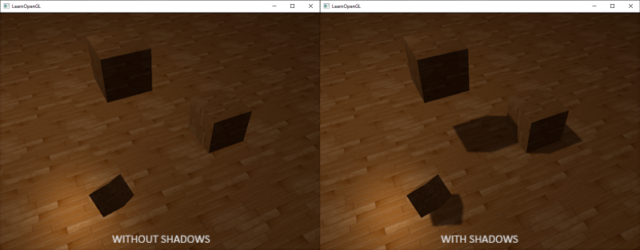
그림자가 있으면 사물들이 서로 어떻게 관련되어 있는지 훨씬 더 명확하게 알 수 있습니다. 예를 들어, 큐브 하나가 다른 큐브들 위에 떠 있다는 사실은 그림자가 있을 때만 제대로 알아볼 수 있습니다.
그림자 구현은 다소 까다로운데, 특히 현재 실시간(래스터 그래픽) 연구에서 완벽한 그림자 알고리즘이 아직 개발되지 않았기 때문입니다. 몇 가지 훌륭한 그림자 근사 기법이 있지만, 각각 나름의 특징과 문제점이 있어 이를 고려해야 합니다.
대부분의 비디오 게임에서 사용되는 기술 중 괜찮은 결과를 내면서도 비교적 구현하기 쉬운 기술은 섀도우 매핑입니다. 섀도우 매핑은 이해하기 어렵지 않고, 성능 저하도 크지 않으며, 전방향 섀도우 맵이나 계단식 섀도우 맵과 같은 고급 알고리즘으로 쉽게 확장할 수 있습니다.
섀도우 매핑
섀도우 매핑의 기본 개념은 매우 간단합니다. 광원의 시점에서 장면을 렌더링하면 광원이 볼 수 있는 모든 부분은 밝게 표시되고, 볼 수 없는 부분은 그림자로 처리됩니다. 예를 들어, 광원과 바닥 사이에 큰 상자가 있다고 가정해 보겠습니다. 광원은 바닥이 아닌 이 상자를 보게 되므로, 바닥 부분은 그림자로 가려져야 합니다.
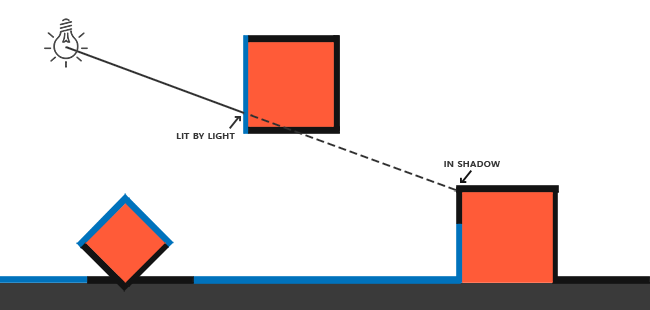
여기서 파란색 선들은 광원이 볼 수 있는 프래그먼트들을 나타냅니다. 가려진 프래그먼트들은 검은색 선으로 표시되며, 그림자가 드리워진 것처럼 보입니다. 광원에서 가장 오른쪽 상자의 프래그먼트로 선이나 광선(ray)을 그려보면, 광선이 가장 오른쪽 상자의 프래그먼트에 도달하기 전에 먼저 떠 있는 컨테이너에 부딪히는 것을 알 수 있습니다. 결과적으로 떠 있는 컨테이너의 프래그먼트는 빛을 받고, 가장 오른쪽 상자의 프래그먼트는 빛을 받지 못해 그림자가 드리워집니다.
우리는 광선이 처음으로 물체에 부딪힌 지점을 찾고, 이 가장 가까운 지점을 광선 상의 다른 지점들과 비교하려고 합니다. 그런 다음, 테스트 지점의 광선 위치가 가장 가까운 지점보다 광선 상에서 더 아래쪽에 있는지 확인하는 간단한 테스트를 수행합니다. 만약 그렇다면, 테스트 지점은 그림자에 가려진 것입니다. 이러한 광원에서 나오는 수천 개의 광선을 순차적으로 처리하는 것은 매우 비효율적인 접근 방식이며 실시간 렌더링에는 적합하지 않습니다. 광선을 투사하지 않고도 비슷한 작업을 수행할 수 있습니다. 대신, 우리에게 매우 익숙한 것, 바로 깊이 버퍼를 사용합니다.
깊이 테스트 챕터에서 깊이 버퍼의 값은 카메라 시점에서 [0,1] 범위로 클램핑된 프래그먼트의 깊이에 해당한다는 것을 기억하실 겁니다. 그렇다면 광원의 시점에서 장면을 렌더링하고 그 결과로 얻은 깊이 값을 텍스처에 저장하면 어떨까요? 이렇게 하면 광원의 시점에서 보이는 가장 가까운 깊이 값을 샘플링할 수 있습니다. 결국 깊이 값은 광원의 시점에서 보이는 첫 번째 프래그먼트를 나타내기 때문입니다. 우리는 이러한 모든 깊이 값을 깊이 맵 또는 섀도우 맵이라고 부르는 텍스처에 저장합니다.

왼쪽 이미지는 방향성 광원(모든 광선이 평행함)이 큐브 아래 표면에 그림자를 드리우는 모습을 보여줍니다. 깊이 맵에 저장된 깊이 값을 사용하여 가장 가까운 지점을 찾고, 이를 통해 프래그먼트가 그림자에 가려져 있는지 여부를 판단합니다. 깊이 맵은 광원에 특화된 뷰 행렬과 투영 행렬을 사용하여 장면을 (광원의 관점에서) 렌더링함으로써 생성됩니다. 이 투영 행렬과 뷰 행렬은 함께 변환 \(T\)를 형성하여 모든 3D 위치를 광원의 (가시) 좌표 공간으로 변환합니다.
방향광은 무한히 멀리 떨어져 있는 것으로 모델링되므로 위치를 갖지 않습니다. 하지만 섀도우 매핑을 위해서는 광원의 시점에서 장면을 렌더링해야 하므로 광원의 방향을 따라 어딘가의 위치에서 장면을 렌더링해야 합니다.
오른쪽 이미지에서는 동일한 방향의 광원과 뷰어를 볼 수 있습니다. 점 \(\vec{\textcolor{red}{P}}\)에 프래그먼트를 렌더링하는데, 이 점이 그림자에 가려져 있는지 여부를 판단해야 합니다. 이를 위해 먼저 변환 함수 \(T\)를 사용하여 점 \(\vec{\textcolor{red}{P}}\)를 광원의 좌표 공간으로 변환합니다. 이제 점 \(\vec{\textcolor{red}{P}}\)는 광원의 시점에서 본 모습이므로, z 좌표는 깊이에 해당하며 이 예에서는 0.9입니다. 점 \(\vec{\textcolor{red}{P}}\)를 사용하여 깊이/섀도우 맵에서 광원의 시점에서 가장 가까운 가시적인 깊이 값을 얻을 수 있습니다. 이 값은 샘플링된 깊이가 0.4인 점 \(\vec{\textcolor{green}{C}}\)에 있습니다. 깊이 맵에서 얻은 깊이 값이 점 \(\vec{\textcolor{red}{P}}\)의 깊이보다 작으므로 점 \(\vec{\textcolor{red}{P}}\)는 가려져 그림자에 가려져 있다고 결론지을 수 있습니다.
따라서 섀도우 매핑은 두 단계로 구성됩니다. 첫 번째 단계에서는 깊이 맵을 렌더링하고, 두 번째 단계에서는 장면을 정상적으로 렌더링한 후 생성된 깊이 맵을 사용하여 프래그먼트가 그림자에 가려져 있는지 여부를 계산합니다. 다소 복잡하게 들릴 수 있지만, 단계별로 살펴보면 이해하기 쉬울 것입니다.
깊이 맵
첫 번째 단계에서는 깊이 맵을 생성해야 합니다. 깊이 맵은 광원의 시점에서 렌더링된 깊이 텍스처로, 그림자 테스트에 사용됩니다. 장면의 렌더링 결과를 텍스처에 저장해야 하므로 프레임 버퍼가 다시 필요합니다.
먼저 깊이 맵을 렌더링하기 위한 프레임버퍼 객체를 생성하겠습니다.
unsigned int depthMapFBO;
glGenFramebuffers(1, &depthMapFBO);
다음으로 프레임버퍼의 깊이 버퍼로 사용할 2D 텍스처를 생성합니다.
const unsigned int SHADOW_WIDTH = 1024, SHADOW_HEIGHT = 1024;
unsigned int depthMap;
glGenTextures(1, &depthMap);
glBindTexture(GL_TEXTURE_2D, depthMap);
glTexImage2D(GL_TEXTURE_2D, 0, GL_DEPTH_COMPONENT,
SHADOW_WIDTH, SHADOW_HEIGHT, 0, GL_DEPTH_COMPONENT, GL_FLOAT, NULL);
glTexParameteri(GL_TEXTURE_2D, GL_TEXTURE_MIN_FILTER, GL_NEAREST);
glTexParameteri(GL_TEXTURE_2D, GL_TEXTURE_MAG_FILTER, GL_NEAREST);
glTexParameteri(GL_TEXTURE_2D, GL_TEXTURE_WRAP_S, GL_REPEAT);
glTexParameteri(GL_TEXTURE_2D, GL_TEXTURE_WRAP_T, GL_REPEAT);
깊이 맵을 생성하는 것은 그다지 복잡해 보이지 않습니다. 우리는 깊이 값만 필요하기 때문에 텍스처 형식을 GL_DEPTH_COMPONENT로 지정합니다. 또한 텍스처의 너비와 높이를 1024로 지정합니다. 이것이 깊이 맵의 해상도입니다.
생성된 깊이 텍스처를 프레임버퍼의 깊이 버퍼로 연결할 수 있습니다.
glBindFramebuffer(GL_FRAMEBUFFER, depthMapFBO);
glFramebufferTexture2D(GL_FRAMEBUFFER, GL_DEPTH_ATTACHMENT, GL_TEXTURE_2D, depthMap, 0);
glDrawBuffer(GL_NONE);
glReadBuffer(GL_NONE);
glBindFramebuffer(GL_FRAMEBUFFER, 0);
광원의 시점에서 장면을 렌더링할 때만 깊이 정보가 필요하므로 컬러 버퍼는 필요하지 않습니다. 하지만 프레임 버퍼 객체는 컬러 버퍼 없이는 완전하지 않으므로 OpenGL에 색상 데이터를 렌더링하지 않을 것임을 명시적으로 알려야 합니다. 이를 위해 glDrawBuffer와 glReadbuffer 함수에서 읽기 버퍼와 그리기 버퍼를 모두 GL_NONE으로 설정합니다.
깊이 값을 텍스처에 렌더링하도록 프레임 버퍼를 제대로 구성하면 첫 번째 패스인 깊이 맵 생성을 시작할 수 있습니다. 두 번째 패스와 결합하면 전체 렌더링 단계는 대략 다음과 같습니다.
// 1. 먼저 깊이 맵을 렌더링합니다.
glViewport(0, 0, SHADOW_WIDTH, SHADOW_HEIGHT);
glBindFramebuffer(GL_FRAMEBUFFER, depthMapFBO);
glClear(GL_DEPTH_BUFFER_BIT);
ConfigureShaderAndMatrices();
RenderScene();
glBindFramebuffer(GL_FRAMEBUFFER, 0);
// 2. 그런 다음 섀도우 매핑(깊이 맵 사용)을 적용하여 장면을 정상적으로 렌더링합니다.
glViewport(0, 0, SCR_WIDTH, SCR_HEIGHT);
glClear(GL_COLOR_BUFFER_BIT | GL_DEPTH_BUFFER_BIT);
ConfigureShaderAndMatrices();
glBindTexture(GL_TEXTURE_2D, depthMap);
RenderScene();
이 코드는 몇 가지 세부 사항을 생략했지만, 섀도우 매핑의 전반적인 개념을 이해하는 데 도움이 될 것입니다. 여기서 중요한 것은 glViewport 호출입니다. 섀도우 맵은 일반적으로 장면을 처음 렌더링할 때 사용하는 해상도(대개 창 해상도)와 다르기 때문에 뷰포트 매개변수를 섀도우 맵 크기에 맞게 변경해야 합니다. 뷰포트 매개변수를 업데이트하는 것을 잊으면 결과적인 깊이 맵이 불완전하거나 너무 작아질 수 있습니다.
광원 공간 변환
이전 코드 조각에서 알 수 없는 부분은 ConfigureShaderAndMatrices 함수입니다. 두 번째 패스(카메라 시점)에서는 평소와 같이 적절한 투영 및 뷰 행렬이 설정되었는지 확인하고 각 객체에 대한 관련 모델 행렬을 설정합니다. 그러나 첫 번째 패스(광원 시점)에서는 광원의 시점에서 장면을 렌더링하기 위해 다른 투영 및 뷰 행렬을 사용해야 합니다.
방향성 광원을 모델링하는 것이므로 모든 광선은 평행합니다. 따라서 원근 왜곡이 없는 직교 투영 행렬을 광원에 사용할 것입니다.
float near_plane = 1.0f, far_plane = 7.5f;
glm::mat4 lightProjection = glm::ortho(-10.0f, 10.0f, -10.0f, 10.0f, near_plane, far_plane);
다음은 이 장의 데모 장면에서 사용된 직교 투영 행렬의 예입니다. 투영 행렬은 보이는 영역(예: 잘리지 않는 영역)의 범위를 간접적으로 결정하기 때문에, 투영 절두체의 크기가 깊이 맵에 포함시키려는 객체를 정확하게 포함하는지 확인해야 합니다. 객체나 프래그먼트가 깊이 맵에 포함되지 않으면 그림자가 생성되지 않습니다.
광원의 시점에서 각 객체가 보이도록 변환하는 뷰 행렬을 생성하기 위해, 이번에는 광원의 위치가 장면의 중심을 향하도록 하여 악명 높은 glm::lookAt 함수를 사용할 것입니다.
glm::mat4 lightView = glm::lookAt(glm::vec3(-2.0f, 4.0f, -1.0f),
glm::vec3( 0.0f, 0.0f, 0.0f),
glm::vec3( 0.0f, 1.0f, 0.0f));
이 두 가지를 결합하면 각 월드 공간 벡터를 광원에서 보이는 공간으로 변환하는 광원 공간 변환 행렬을 얻을 수 있습니다. 이는 깊이 맵을 렌더링하는 데 필요한 바로 그 행렬입니다.
glm::mat4 lightSpaceMatrix = lightProjection * lightView;
이 lightSpaceMatrix는 앞서 T로 표기했던 변환 행렬입니다. 이 lightSpaceMatrix를 사용하면 각 셰이더에 투영 행렬과 뷰 행렬의 광원 공간 대응값을 제공하기만 하면 평소처럼 장면을 렌더링할 수 있습니다. 하지만 우리는 깊이 값에만 관심이 있고, 비용이 많이 드는 프래그먼트(조명) 계산은 필요하지 않습니다. 성능을 향상시키기 위해 깊이 맵 렌더링에는 훨씬 간단하지만 다른 셰이더를 사용할 것입니다.
깊이 맵으로 렌더링
광원의 시점에서 장면을 렌더링할 때는 정점을 광원 공간으로 변환하는 간단한 셰이더를 사용하는 것이 훨씬 효율적입니다. 이러한 간단한 셰이더인 simpleDepthShader를 구현하기 위해 다음과 같은 정점 셰이더를 사용하겠습니다.
#version 330 core
layout (location = 0) in vec3 aPos;
uniform mat4 lightSpaceMatrix;
uniform mat4 model;
void main()
{
gl_Position = lightSpaceMatrix * model * vec4(aPos, 1.0);
}
이 정점 셰이더는 객체별 모델과 정점을 입력으로 받아 lightSpaceMatrix를 사용하여 모든 정점을 광원 공간으로 변환합니다.
컬러 버퍼가 없고 드로우 및 리드 버퍼를 비활성화했으므로 생성된 프래그먼트는 별도의 처리가 필요하지 않아 빈 프래그먼트 셰이더를 사용할 수 있습니다.
#version 330 core
void main()
{
// gl_FragDepth = gl_FragCoord.z;
}
이 빈 프래그먼트 셰이더는 아무런 처리도 하지 않으며, 실행이 끝나면 깊이 버퍼가 업데이트됩니다. 해당 줄의 주석을 해제하여 깊이를 명시적으로 설정할 수도 있지만, 사실상 내부적으로는 이와 같은 방식으로 처리됩니다.
이제 깊이/섀도우 맵을 렌더링하는 과정은 다음과 같습니다.
simpleDepthShader.use();
glUniformMatrix4fv(lightSpaceMatrixLocation, 1, GL_FALSE, glm::value_ptr(lightSpaceMatrix));
glViewport(0, 0, SHADOW_WIDTH, SHADOW_HEIGHT);
glBindFramebuffer(GL_FRAMEBUFFER, depthMapFBO);
glClear(GL_DEPTH_BUFFER_BIT);
RenderScene(simpleDepthShader);
glBindFramebuffer(GL_FRAMEBUFFER, 0);
여기서 RenderScene 함수는 셰이더 프로그램을 입력받아 관련 드로잉 함수를 모두 호출하고 필요한 경우 해당 모델 행렬을 설정합니다.
그 결과, 광원의 관점에서 보이는 각 프래그먼트의 가장 가까운 깊이 값을 담고 있는 깊이 버퍼가 깔끔하게 채워집니다. 이 텍스처를 화면을 가득 채우는 2D 쿼드에 렌더링하면(프레임 버퍼 챕터 끝부분의 후처리 섹션에서 했던 것과 유사하게) 다음과 같은 결과가 나옵니다.
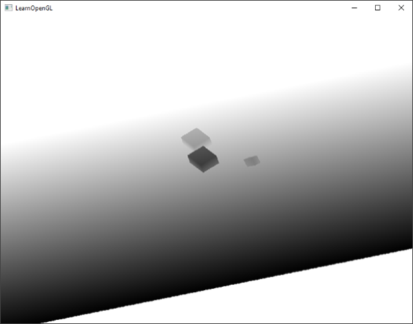
깊이 맵을 사각형에 렌더링하기 위해 다음과 같은 프래그먼트 셰이더를 사용했습니다.
#version 330 core
out vec4 FragColor;
in vec2 TexCoords;
uniform sampler2D depthMap;
void main()
{
float depthValue = texture(depthMap, TexCoords).r;
FragColor = vec4(vec3(depthValue), 1.0);
}
깊이를 직교 투영 행렬 대신 원근 투영 행렬을 사용하여 표시할 때 깊이가 비선형적이기 때문에 몇 가지 미묘한 차이가 있음을 유의하세요. 이 장의 끝부분에서 이러한 미묘한 차이점 중 일부를 살펴보겠습니다.
장면을 깊이 맵으로 렌더링하는 소스 코드는 여기에서 찾을 수 있습니다.
그림자 렌더링
깊이 맵이 제대로 생성되면 실제 그림자 렌더링을 시작할 수 있습니다. 프래그먼트가 그림자에 있는지 확인하는 코드는 (당연히) 프래그먼트 셰이더에서 실행되지만, 광원-공간 변환은 정점 셰이더에서 수행합니다.
#version 330 core
layout (location = 0) in vec3 aPos;
layout (location = 1) in vec3 aNormal;
layout (location = 2) in vec2 aTexCoords;
out VS_OUT {
vec3 FragPos;
vec3 Normal;
vec2 TexCoords;
vec4 FragPosLightSpace;
} vs_out;
uniform mat4 projection;
uniform mat4 view;
uniform mat4 model;
uniform mat4 lightSpaceMatrix;
void main()
{
vs_out.FragPos = vec3(model * vec4(aPos, 1.0));
vs_out.Normal = transpose(inverse(mat3(model))) * aNormal;
vs_out.TexCoords = aTexCoords;
vs_out.FragPosLightSpace = lightSpaceMatrix * vec4(vs_out.FragPos, 1.0);
gl_Position = projection * view * vec4(vs_out.FragPos, 1.0);
}
여기서 새로운 점은 추가 출력 벡터인 FragPosLightSpace입니다. 깊이 맵 단계에서 정점을 광원 공간으로 변환하는 데 사용되는 동일한 lightSpaceMatrix를 사용하여 월드 공간의 정점 위치를 프래그먼트 셰이더에서 사용할 광원 공간으로 변환합니다.
장면을 렌더링하는 데 사용할 메인 프래그먼트 셰이더는 블린-퐁(Blinn-Phong) 조명 모델을 사용합니다. 프래그먼트 셰이더 내부에서는 그림자 값을 계산하는데, 프래그먼트가 그림자에 가려져 있으면 1.0이고, 그림자에 가려져 있지 않으면 0.0입니다. 이렇게 계산된 확산광과 반사광 성분은 이 그림자 성분과 곱해집니다. 그림자는 빛 산란 때문에 완전히 어두운 경우가 드물기 때문에 주변광 성분은 그림자 곱셈에서 제외합니다.
#version 330 core
out vec4 FragColor;
in VS_OUT {
vec3 FragPos;
vec3 Normal;
vec2 TexCoords;
vec4 FragPosLightSpace;
} fs_in;
uniform sampler2D diffuseTexture;
uniform sampler2D shadowMap;
uniform vec3 lightPos;
uniform vec3 viewPos;
float ShadowCalculation(vec4 fragPosLightSpace)
{
[...]
}
void main()
{
vec3 color = texture(diffuseTexture, fs_in.TexCoords).rgb;
vec3 normal = normalize(fs_in.Normal);
vec3 lightColor = vec3(1.0);
// ambient
vec3 ambient = 0.15 * lightColor;
// diffuse
vec3 lightDir = normalize(lightPos - fs_in.FragPos);
float diff = max(dot(lightDir, normal), 0.0);
vec3 diffuse = diff * lightColor;
// specular
vec3 viewDir = normalize(viewPos - fs_in.FragPos);
float spec = 0.0;
vec3 halfwayDir = normalize(lightDir + viewDir);
spec = pow(max(dot(normal, halfwayDir), 0.0), 64.0);
vec3 specular = spec * lightColor;
// calculate shadow
float shadow = ShadowCalculation(fs_in.FragPosLightSpace);
vec3 lighting = (ambient + (1.0 - shadow) * (diffuse + specular)) * color;
FragColor = vec4(lighting, 1.0);
}
프래그먼트 셰이더는 고급 조명 챕터에서 사용했던 것과 거의 동일하지만, 그림자 계산 기능이 추가되었습니다. 그림자 계산의 대부분을 담당하는 ShadowCalculation이라는 함수를 선언했습니다. 프래그먼트 셰이더의 마지막 부분에서는 확산광과 반사광에 그림자 성분의 역수(즉, 프래그먼트가 그림자에 가려지지 않은 정도)를 곱합니다. 이 프래그먼트 셰이더는 추가 입력으로 광원 공간에서의 프래그먼트 위치와 첫 번째 렌더 패스에서 생성된 깊이 맵을 받습니다.
프래그먼트가 그림자에 가려졌는지 확인하는 첫 번째 단계는 광원 공간의 프래그먼트 위치를 클립 공간의 정규화된 장치 좌표로 변환하는 것입니다. 버텍스 셰이더에서 gl_Position에 클립 공간의 버텍스 위치를 출력할 때, OpenGL은 자동으로 원근 변환을 수행합니다. 예를 들어, 클립 공간 좌표를 [-w, w] 범위에서 [-1, 1] 범위로 변환하기 위해 벡터의 x, y, z 성분을 w 성분으로 나눕니다. 하지만 클립 공간의 FragPosLightSpace는 gl_Position을 통해 프래그먼트 셰이더로 전달되지 않으므로, 이 원근 변환을 직접 수행해야 합니다.
float ShadowCalculation(vec4 fragPosLightSpace)
{
// perform perspective divide
vec3 projCoords = fragPosLightSpace.xyz / fragPosLightSpace.w;
[...]
}
이 함수는 프래그먼트의 광원 위치를 [-1,1] 범위 내에서 반환합니다.
직교 투영 행렬을 사용할 경우 정점의 w 성분은 변경되지 않으므로 이 단계는 사실상 의미가 없습니다. 그러나 원근 투영을 사용할 때는 이 단계가 필요하므로 이 줄을 유지해야 두 투영 행렬 모두에서 제대로 작동합니다.
깊이 맵의 깊이 값이 [0,1] 범위에 있고, projCoords를 사용하여 깊이 맵에서 샘플링하려고 하므로 NDC 좌표를 [0,1] 범위로 변환합니다.
projCoords = projCoords * 0.5 + 0.5;
이러한 투영 좌표를 사용하면 깊이 맵을 샘플링할 수 있습니다. projCoords에서 얻은 [0,1] 좌표는 첫 번째 렌더링 패스에서 변환된 NDC 좌표에 직접 대응하기 때문입니다. 이를 통해 광원의 관점에서 가장 가까운 깊이 값을 얻을 수 있습니다.
float closestDepth = texture(shadowMap, projCoords.xy).r;
이 프래그먼트의 현재 깊이를 얻으려면 투영된 벡터의 z 좌표를 가져오면 되는데, 이는 광원의 관점에서 본 이 프래그먼트의 깊이와 같습니다.
float currentDepth = projCoords.z;
실제 비교는 currentDepth가 closestDepth보다 높은지 확인하는 것이며, 만약 그렇다면 해당 조각이 그림자에 가려진 것입니다.
float shadow = currentDepth > closestDepth ? 1.0 : 0.0;
그러면 전체 ShadowCalculation 함수는 다음과 같습니다.
float ShadowCalculation(vec4 fragPosLightSpace)
{
// 원근 분할 수행
vec3 projCoords = fragPosLightSpace.xyz / fragPosLightSpace.w;
// [0, 1] 범위로 변환
projCoords = projCoords * 0.5 + 0.5;
// 광원의 관점에서 가장 가까운 깊이 값을 가져옴 ([0,1] 범위의 fragPosLight를 좌표로 사용)
float closestDepth = texture(shadowMap, projCoords.xy).r;
// 광원의 관점에서 현재 프래그먼트의 깊이를 가져옴
float currentDepth = projCoords.z;
// 현재 프래그먼트 위치가 그림자 안에 있는지 확인
float shadow = currentDepth > closestDepth ? 1.0 : 0.0;
return shadow;
}
이 셰이더를 활성화하고, 적절한 텍스처를 바인딩하고, 두 번째 렌더링 패스에서 기본 투영 및 뷰 행렬을 활성화하면 아래 이미지와 유사한 결과를 얻을 수 있습니다.
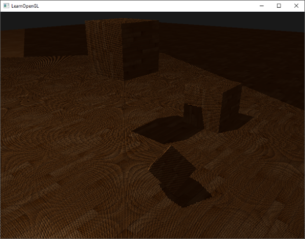
제대로 실행했다면 (다소 오류가 있더라도) 바닥과 큐브에 그림자가 생기는 것을 볼 수 있을 것입니다. 데모 애플리케이션의 소스 코드는 여기에서 확인할 수 있습니다.
섀도우 맵 개선
섀도우 매핑의 기본 기능은 구현했지만, 보시다시피 아직 완벽하지는 않습니다. 섀도우 매핑과 관련된 몇 가지 (명백히 드러나는) 문제점을 수정해야 합니다. 다음 섹션에서는 이러한 문제점들을 해결하는 데 집중하겠습니다.
섀도우 아크네
이전 이미지에서 무언가 잘못되었다는 것이 분명합니다. 더 자세히 확대해 보면 모아레 무늬와 유사한 패턴이 매우 뚜렷하게 나타납니다.

바닥 사각형의 상당 부분이 검은색 선이 번갈아 나타나는 형태로 렌더링된 것을 볼 수 있습니다. 이러한 섀도우 매핑 아티팩트는 섀도우 아크네(shadow acne)라고 하며 다음 이미지를 통해 설명할 수 있습니다.
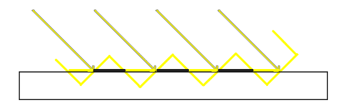
섀도우 맵은 해상도에 제한이 있기 때문에, 광원에서 비교적 멀리 떨어져 있는 여러 프래그먼트가 깊이 맵에서 동일한 값을 샘플링할 수 있습니다. 이미지는 바닥을 보여주는데, 각 노란색 기울어진 패널은 깊이 맵의 단일 텍셀을 나타냅니다. 보시다시피, 여러 프래그먼트가 동일한 깊이 샘플을 샘플링합니다.
일반적으로는 문제가 없지만, 광원이 표면을 비스듬히 바라보는 경우 문제가 발생합니다. 이 경우 깊이 맵 또한 비스듬한 각도로 렌더링되기 때문입니다. 그러면 여러 프래그먼트가 동일한 기울어진 깊이 텍셀에 접근하게 되는데, 일부는 바닥 위에 있고 일부는 아래에 있게 되어 그림자 불일치가 발생합니다. 이로 인해 일부 프래그먼트는 그림자에 가려진 것으로 간주되고 일부는 그렇지 않은 것으로 간주되어 이미지에서 줄무늬 패턴이 나타납니다.
표면(또는 섀도우 맵)의 깊이를 작은 편향량만큼 오프셋하는 그림자 편향(shadow bias)이라는 간단한 방법을 사용하면 이 문제를 해결할 수 있습니다. 이렇게 하면 프래그먼트가 표면 위에 잘못 표시되는 문제를 방지할 수 있습니다.
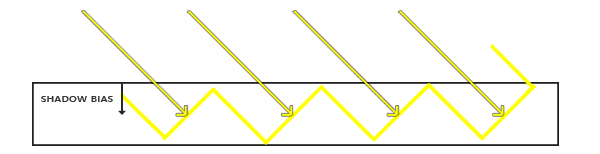
바이어스를 적용하면 모든 샘플의 깊이가 표면의 깊이보다 작아지므로 표면 전체가 그림자 없이 정확하게 조명됩니다. 이러한 바이어스는 다음과 같이 구현할 수 있습니다.
float bias = 0.005;
float shadow = currentDepth - bias > closestDepth ? 1.0 : 0.0;
그림자 편향 값을 0.005로 설정하면 장면의 문제점이 상당 부분 해결되지만, 편향 값은 광원과 표면 사이의 각도에 크게 의존한다는 것을 알 수 있습니다. 표면이 광원에 대해 가파른 각도를 이루는 경우 그림자에 여전히 얼룩이 생길 수 있습니다. 보다 안정적인 접근 방식은 표면이 광원을 향하는 각도에 따라 편향 값을 변경하는 것입니다. 이는 내적을 이용하여 해결할 수 있습니다.
float bias = max(0.05 * (1.0 - dot(normal, lightDir)), 0.005);
여기서는 표면의 법선 벡터와 광원의 방향을 기준으로 최대 0.05, 최소 0.005의 편향값을 적용했습니다. 이렇게 하면 바닥처럼 광원에 거의 수직인 표면에는 작은 편향값이 적용되고, 큐브의 측면처럼 훨씬 큰 편향값이 적용됩니다. 다음 이미지는 동일한 장면을 그림자에 편향값을 적용한 모습입니다.
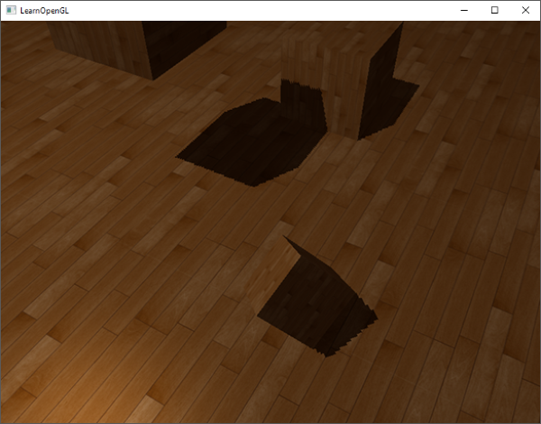
적절한 바이어스 값을 선택하려면 각 장면마다 다르기 때문에 약간의 조정이 필요하지만, 대부분의 경우 아티팩트가 모두 제거될 때까지 바이어스 값을 천천히 증가시키면 됩니다.
피터 패닝
그림자 편향을 사용하는 단점은 객체의 실제 깊이에 오프셋을 적용한다는 것입니다. 결과적으로, 아래 그림에서 볼 수 있듯이 (과장된 편향 값 사용 시) 편향 값이 너무 커지면 실제 객체 위치와 그림자 위치 사이에 눈에 띄는 차이가 발생할 수 있습니다.
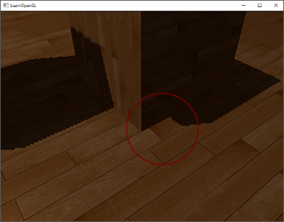
이 그림자 현상은 객체가 그림자에서 약간 분리되어 보이는 것처럼 보이기 때문에 피터 패닝이라고 불립니다. 깊이 맵을 렌더링할 때 전면 컬링을 사용하면 피터 패닝 문제를 대부분 해결할 수 있습니다. 페이스 컬링 챕터에서 설명했듯이 OpenGL은 기본적으로 후면을 컬링합니다. 섀도우 맵 단계에서 전면을 컬링하도록 OpenGL에 지시함으로써 이 순서를 바꾸는 것입니다.
깊이 맵에는 깊이 값만 필요하기 때문에, 솔리드 객체의 경우 앞면의 깊이를 사용하든 뒷면의 깊이를 사용하든 상관없습니다. 뒷면의 깊이를 사용해도 객체 내부에 그림자가 있더라도 결과가 달라지지 않습니다. 어차피 내부는 보이지 않으니까요.

피터 패닝 현상을 해결하기 위해 섀도우 맵 생성 중에 모든 정면 면을 제거합니다. 단, 먼저 GL_CULL_FACE를 활성화해야 합니다.
glCullFace(GL_FRONT);
RenderSceneToDepthMap();
glCullFace(GL_BACK); // 원래 컬링 페이스를 재설정하는 것을 잊지 마세요.
이 방법은 피터패닝 현상을 효과적으로 해결하지만, 내부가 있고 구멍이 없는 단단한 물체에만 적용됩니다. 예를 들어, 우리 장면에서는 큐브에 이 방법이 완벽하게 작동합니다. 하지만 바닥에는 제대로 작동하지 않습니다. 앞면을 컬링하면 바닥 자체가 완전히 제외되기 때문입니다. 바닥은 단일 평면이므로 완전히 컬링됩니다. 따라서 이 방법을 사용하여 피터패닝 현상을 해결하려면, 필요한 경우에만 물체의 앞면을 컬링하도록 주의해야 합니다.
또 다른 고려 사항은 (먼 곳에 있는 큐브처럼) 그림자를 받는 물체와 근접한 오브젝트의 경우 여전히 잘못된 결과가 나타날 수 있다는 점입니다. 하지만 일반적인 바이어스(bias) 값을 적절히 사용하면 대개 피터 패닝 현상을 피할 수 있습니다.
오버샘플링
또 다른 시각적 불일치는 광원의 가시 절두체 바깥 영역이 실제로는 그림자가 아닌데도 그림자로 인식되는 현상입니다. 이는 광원 절두체 바깥 영역의 투영 좌표가 1.0보다 크기 때문에 발생하며, 따라서 깊이 텍스처의 기본 범위인 [0,1]을 벗어나 샘플링하게 됩니다. 텍스처의 래핑 방식에 따라 광원의 실제 깊이 값과 일치하지 않는 잘못된 깊이 결과가 나타납니다.
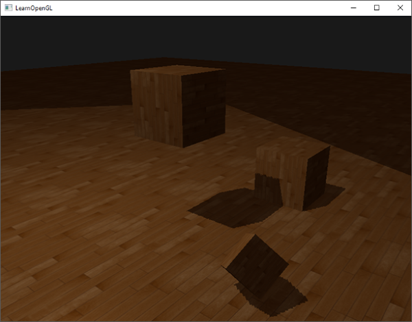
이미지에서 보면 빛이 비치는 가상의 영역이 있고, 이 영역 바깥쪽의 넓은 부분이 그림자로 덮여 있는 것을 볼 수 있습니다. 이 그림자 영역은 바닥에 투영된 깊이 맵의 크기를 나타냅니다. 이러한 현상이 발생하는 이유는 앞서 깊이 맵의 래핑 옵션을 GL_REPEAT로 설정했기 때문입니다.
우리가 원하는 것은 깊이 맵 범위 밖의 모든 좌표의 깊이를 1.0으로 설정하는 것입니다. 이렇게 하면 해당 좌표는 그림자에 가려지지 않습니다(어떤 객체도 깊이가 1.0보다 클 수 없기 때문입니다). 이를 위해 텍스처 테두리 색상을 구성하고 깊이 맵의 텍스처 래핑 옵션을 GL_CLAMP_TO_BORDER로 설정할 수 있습니다.
glTexParameteri(GL_TEXTURE_2D, GL_TEXTURE_WRAP_S, GL_CLAMP_TO_BORDER);
glTexParameteri(GL_TEXTURE_2D, GL_TEXTURE_WRAP_T, GL_CLAMP_TO_BORDER);
float borderColor[] = { 1.0f, 1.0f, 1.0f, 1.0f };
glTexParameterfv(GL_TEXTURE_2D, GL_TEXTURE_BORDER_COLOR, borderColor);
이제 깊이 맵의 [0,1] 좌표 범위를 벗어난 값을 샘플링할 때마다 텍스처 함수는 항상 깊이 값 1.0을 반환하여 그림자 값 0.0을 생성합니다. 이제 결과가 훨씬 더 자연스러워 보입니다.
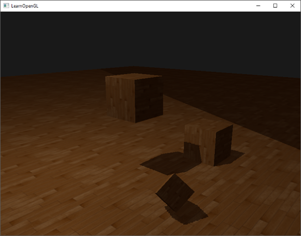
여전히 어두운 영역이 보이는 부분이 하나 있는 것 같습니다. 그 부분은 광원의 직교 절두체의 먼 평면 바깥쪽 좌표입니다. 그림자 방향을 보면 이 어두운 영역이 항상 광원 절두체의 먼 끝부분에 나타나는 것을 알 수 있습니다.
광원 공간에 투영된 프래그먼트 좌표의 z 좌표가 1.0보다 크면 해당 프래그먼트 좌표는 광원의 원거리 평면보다 멀리 떨어져 있는 것입니다. 이 경우 GL_CLAMP_TO_BORDER 래핑 메서드는 더 이상 작동하지 않습니다. 왜냐하면 이 메서드는 좌표의 z 성분을 깊이 맵 값과 비교하는데, z가 1.0보다 큰 경우 항상 true를 반환하기 때문입니다.
이 문제에 대한 해결책은 비교적 간단합니다. 투영된 벡터의 z 좌표가 1.0보다 클 때마다 그림자 값을 0.0으로 강제 설정하면 됩니다.
float ShadowCalculation(vec4 fragPosLightSpace)
{
[...]
if(projCoords.z > 1.0)
shadow = 0.0;
return shadow;
}
원거리 평면을 확인하고 깊이 맵을 수동으로 지정한 테두리 색상으로 클램핑하면 깊이 맵의 과샘플링 문제가 해결됩니다. 이렇게 하면 마침내 우리가 원하는 결과를 얻을 수 있습니다.
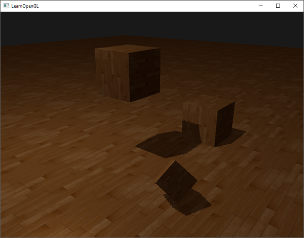
결과적으로, 투영된 파편 좌표가 깊이 맵 범위 내에 있는 부분에만 그림자가 생기고, 광원 절두체 바깥에는 그림자가 보이지 않게 됩니다. 게임에서는 보통 이러한 현상이 원거리에서만 발생하도록 구현하기 때문에, 이전에 나타났던 확연한 검은 영역보다 훨씬 더 자연스러운 효과입니다.
PCF
현재 그림자는 풍경에 멋진 분위기를 더해주지만, 아직 우리가 원하는 수준에는 미치지 못합니다. 그림자 부분을 확대해 보면 섀도우 매핑이 해상도에 따라 어떻게 달라지는지 금방 알 수 있습니다.
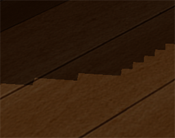
깊이 맵은 고정된 해상도를 가지므로, 깊이 정보가 텍셀당 하나 이상의 프래그먼트에 걸쳐 나타나는 경우가 많습니다. 결과적으로 여러 프래그먼트가 깊이 맵에서 동일한 깊이 값을 샘플링하여 동일한 그림자 영역을 생성하게 되고, 이로 인해 들쭉날쭉한 블록 모양의 가장자리가 만들어집니다.
깊이 맵 해상도를 높이거나 광원 절두체를 장면에 최대한 가깝게 맞추면 이러한 덩어리진 그림자를 줄일 수 있습니다.
이러한 들쭉날쭉한 가장자리를 해결하는 또 다른 (부분적인) 방법은 PCF(Percentage-Closer Filtering)라고 불리는 필터링 기법입니다. 이 용어는 그림자를 부드럽게 만들어 경계가 뚜렷하거나 딱딱해 보이지 않도록 하는 다양한 필터링 함수를 포괄합니다. 핵심 아이디어는 깊이 맵에서 여러 번 샘플링하고, 매번 약간씩 다른 텍스처 좌표를 사용하는 것입니다. 각 샘플에 대해 그림자 영역인지 아닌지를 확인합니다. 그런 다음 모든 하위 결과를 결합하고 평균을 내어 부드러운 그림자를 얻습니다.
PCF의 간단한 구현 방법 중 하나는 깊이 맵의 주변 텍셀을 샘플링하고 그 결과를 평균내는 것입니다.
float shadow = 0.0;
vec2 texelSize = 1.0 / textureSize(shadowMap, 0);
for(int x = -1; x <= 1; ++x)
{
for(int y = -1; y <= 1; ++y)
{
float pcfDepth = texture(shadowMap, projCoords.xy + vec2(x, y) * texelSize).r;
shadow += currentDepth - bias > pcfDepth ? 1.0 : 0.0;
}
}
shadow /= 9.0;
여기서 textureSize는 주어진 샘플러 텍스처의 밉맵 레벨 0에서의 너비와 높이를 나타내는 vec2 값을 반환합니다. 이 값을 1로 나누면 단일 텍셀의 크기가 되는데, 이 크기를 사용하여 텍스처 좌표를 오프셋함으로써 각 샘플이 서로 다른 깊이 값을 샘플링하도록 합니다. 여기서는 투영된 좌표의 x, y 값을 중심으로 9개의 값을 샘플링하고, 그림자 가림 현상을 검사한 후, 최종적으로 전체 샘플 수로 평균을 냅니다.
샘플 수를 늘리거나 texelSize 변수를 변경하면 부드러운 그림자의 품질을 향상시킬 수 있습니다. 아래는 간단한 PCF를 적용한 그림자입니다.
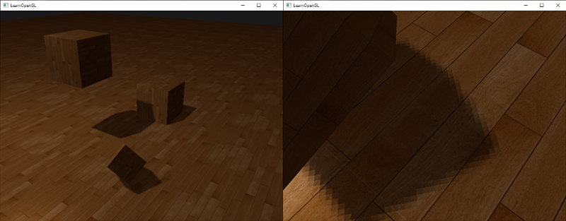
멀리서 보면 그림자가 훨씬 자연스럽고 부드러워 보입니다. 확대해서 보면 섀도우 매핑으로 인한 해상도 왜곡 현상이 여전히 나타나지만, 일반적으로 대부분의 용도에서 만족스러운 결과를 얻을 수 있습니다.
예제의 전체 소스 코드는 여기에서 확인할 수 있습니다.
PCF에는 실제로 훨씬 더 많은 기능이 있으며, 부드러운 그림자의 품질을 상당히 향상시킬 수 있는 다양한 기술이 있지만, 이 장의 분량을 고려하여 나중에 자세히 다루도록 하겠습니다.
직교 투영 vs 원근 투영
깊이 맵을 렌더링할 때 직교 투영 행렬과 원근 투영 행렬을 사용하는 방식에는 차이가 있습니다. 직교 투영 행렬은 장면을 원근에 따라 변형시키지 않으므로 모든 뷰/광선이 평행합니다. 따라서 방향성 광원에 적합한 투영 행렬입니다. 반면 원근 투영 행렬은 모든 정점을 원근에 따라 변형시키므로 다른 결과가 나타납니다. 다음 이미지는 두 투영 방식의 그림자 영역 차이를 보여줍니다.
원근 투영은 방향성 조명과 달리 실제 위치를 가진 광원에 가장 적합합니다. 원근 투영은 스포트라이트나 점광원에 주로 사용되는 반면, 직교 투영은 방향성 조명에 사용됩니다.
원근 투영 행렬을 사용할 때 나타나는 또 다른 미묘한 차이점은 깊이 버퍼를 시각화할 때 거의 완전히 흰색으로 표시되는 경우가 많다는 것입니다. 이는 원근 투영에서 깊이가 비선형 깊이 값으로 변환되고, 그 가늠할 수 있는 범위의 대부분이 근거리 평면에 가깝기 때문입니다. 직교 투영에서처럼 깊이 값을 제대로 보려면 먼저 비선형 깊이 값을 선형으로 변환해야 합니다. 이는 깊이 테스트 장에서 설명한 내용과 같습니다.
#version 330 core
out vec4 FragColor;
in vec2 TexCoords;
uniform sampler2D depthMap;
uniform float near_plane;
uniform float far_plane;
float LinearizeDepth(float depth)
{
float z = depth * 2.0 - 1.0; // Back to NDC
return (2.0 * near_plane * far_plane) / (far_plane + near_plane - z * (far_plane - near_plane));
}
void main()
{
float depthValue = texture(depthMap, TexCoords).r;
FragColor = vec4(vec3(LinearizeDepth(depthValue) / far_plane), 1.0); // perspective
// FragColor = vec4(vec3(depthValue), 1.0); // orthographic
}
이는 직교 투영에서 보았던 것과 유사한 깊이 값을 보여줍니다. 단, 이는 디버깅 용도로만 유용하며, 상대적 깊이는 변하지 않으므로 직교 투영 행렬이든 투영 행렬이든 깊이 검사 방법은 동일합니다.
추가 자료
- Tutorial 16 : Shadow mapping: opengl-tutorial.org의 섀도우 매핑 튜토리얼과 유사하지만 몇 가지 추가 설명이 있습니다.
- Shadow Mapping - Part 1: ogldev의 또 다른 섀도우 매핑 튜토리얼입니다.
- How Shadow Mapping Works: TheBennyBox가 제작한 섀도우 매핑 및 구현 방법에 대한 3부작 유튜브 튜토리얼입니다.
- Common Techniques to Improve Shadow Depth Maps: 마이크로소프트에서 섀도우 맵의 품질을 향상시키는 다양한 기술을 소개하는 훌륭한 기사입니다.
- How I Implemented Shadows in my Game Engine: ThinMatrix가 섀도우 맵 개선 방법에 대해 설명한 훌륭한 영상입니다.